MISION
El Centro Universitario UAEM Ecatepec es una institución de educación superior desconcentrada de la Universidad Autónoma del Estado de México que ofrece estudios profesionales y avanzados en las modalidades multidisciplinarias o interdisciplinarias asumiendo el compromiso con la sociedad de generar, preservar, transmitir y extender los conocimientos universales llevando a cabo investigación humanística, científica y tecnológica; así mismo, difundir y promover las diferentes manifestaciones del arte y la cultura a través de su personal docente y administrativo capacitado con base en los valores institucionales congruentes a las necesidades del entorno social.
VISION
Seremos un Centro Universitario que imparta Educación Superior (estudios profesionales y avanzados) de calidad con infraestructura académica, tecnológica y administrativa adecuada que permitan el reconocimiento y acreditación de nuestros programas de estudio bajo estándares nacionales que atiendan la demanda educativa de nuestro entorno.
Consolidar una plantilla de profesores altamente capacitados que participen en redes nacionales de investigación y formen parte activa de Cuerpos Académicos con Líneas de Generación y Aplicación del Conocimiento adecuadas a los programas educativos y a las necesidades de la sociedad en la que nos encontramos inmersos.
Aplicaremos con equidad y eficiencia los programas de apoyo académico y económico, para fortalecer la permanencia, promoción y egreso de la comunidad estudiantil, que a su vez se reflejen de manera positiva en los indicadores de eficiencia terminal y titulación del Centro Universitario UAEM Ecatepec.
El CU UAEM Ecatepec será un espacio donde se promueva el desarrollo integral de la comunidad universitaria con conocimientos, valores y responsabilidad social, a través de la difusión de la cultura, promoción de actividades físicas, educación para la salud y el cuidado del medio ambiente.
El Centro Universitario formará alumnos con espíritu emprendedor y brindará apoyo a los sectores público y privado para la creación y/o consolidación de micro, pequeñas y medianas empresas, autosuficientes y generadoras de empleo a través de la incubadora.
Tendremos una administración eficiente y transparente que facilite la ejecución de las funciones sustantivas y adjetivas del Centro Universitario sustentadas en los diferentes programas de desarrollo institucional.
El personal administrativo estará capacitado conforme a su perfil de puesto enfocado a la satisfacción del usuario y bajo un Sistema de Gestión de Calidad.
OBJETIVOS
Objetivo 1 Ofrecer educación superior de calidad
Formar profesionistas y posgraduados con base en competencias genéricas y orientado al modelo curricular hacia el aprendizaje, especializados por área de conocimiento.
Contar con Programas Educativos (PE) reconocidos por su calidad académica y pertinencia, establecidos por los CIEES y por CONAEVA.
Mejorar la calidad académica para el aprendizaje del idioma inglés.
Contar con un modelo educativo centrado en el aprendizaje significativo, con el apoyo de una planta académica bajo estándares nacionales y nuevas tecnologías, infraestructura y materiales adecuados a las necesidades del modelo.
Ofrecer al alumno una formación integral que considere las diferencias individuales y sea reflejada en el aprovechamiento escolar, estilos de vida saludable y en la eficiencia terminal.
Objetivo 2 Generar investigación que responda a las necesidades de desarrollo sustentable de la región oriente del Estado de México.
Formar profesionistas e investigadores capaces de resolver problemas y/o generar conocimiento para beneficio de la sociedad.
Ofrecer PE de estudios avanzados a áreas afines económico-administrativas que respondan a las necesidades de actualización y especialización disciplinaria, y con la posibilidad de cumplir con los estándares nacionales de calidad y/o reconocidos por el PNP.
Contar con cuerpos académicos (CA) que den sustento a los PE de calidad que fortalezcan la investigación científica y tecnológica.
Objetivo 3 Preservar e incrementar el capital cultural y extender sus servicios a la sociedad.
Fortalecer las diversas manifestaciones culturales y artísticas del Centro Universitario y su entorno.
Lograr el rescate, preservación y difusión de vestigios arqueológicos en el terreno del Centro Universitario UAEM Ecatepec.
Fortalecer e incrementar la participación de los universitarios en atención a las demandas de la sociedad mediante la extensión de servicios, con el fin de promover el desarrollo académico del Centro Universitario, y favorecer el bienestar social y económico de la zona de influencia.
Objetivo 4 Ser un Centro Universitario transparente en su ejercicio académico, administrativo, de gestión y planeación.Ofrecer atención de calidad que satisfaga los requerimientos de la comunidad universitaria en un contexto de transparencia y rendición de cuentas.Contar con un marco jurídico que sustente el desarrollo del Centro Universitario.
Fortalecer el trabajo de los Consejos Académicos y de Gobierno.
Contar con procesos participativos de planeación y evaluación apoyados en un sistema de información estadística oportuna, suficiente y confiable para mejorar la rendición de cuentas y la toma de decisiones.
Fortalecer la identidad e imagen del Centro Universitario en su entorno social.
Salvaguardar la integridad física, patrimonial y del entorno de los universitarios, ante los riesgos de contingencia.
VALORES INSTITUCIONALES
El Centro Universitario Ecatepec apegado a los valores institucionales de la UAEM, promueve y fomenta aquellos que permiten el desarrollo de la sociedad mediante.
Busqueda de la Verdad
El ser humano que la Universidad forma es una persona dispuesta a la búsqueda de la verdad que adopta una actitud de duda para salir de las seguridades que da la sociedad con sus reglas establecidas y sus relaciones definidas. Dudar, es alejarse de la certidumbre creada para ubicarse en el correcto lugar y ser creativo. Los universitarios tienen la responsabilidad de buscar otras vías políticas, sociales y económicas para ofrecer a la sociedad un nuevo horizonte.
Humanismo
En la búsqueda de la verdad se coloca el humanismo. Éste no sólo implica la defensa y el impulso de aquello que define la esencia del ser humano, en tanto ser digno, inviolable y sujeto de derechos, sino además de aquello que el ser humano puede ser.
En este sentido la Universidad debe erigirse en el lugar privilegiado desde el cual se impulsen las potencialidades humanas, así como en el bastión que vigile que cada persona pueda desarrollar cabalmente sus potencialidades en aras de una sociedad más justa, en donde predomine el trato equitativo y respetuoso.
El humanista no sólo atiende al hombre sino que promueve las acciones que lo colocan eficazmente ante los procesos culturales. Descubre lo humanamente valioso en el otro para renovar la sociedad. La educación universitaria es humanística cuando el conocimiento del cosmos es resultado de una valoración propiamente espiritual.
Justicia
La justicia garantiza a las personas igualdad de condiciones que le posibiliten realizarse individual y socialmente; asimismo, implica velar por el ejercicio de la libertad de manera equilibrada para contribuir a la armonía social con protección de los intereses y derechos intrínsecos a las personas.
Una sociedad se sostiene y progresa si atiende sus derechos y obligaciones, por ello, la Universidad promoverá la justicia como virtud de la igualdad que existe y se reconoce entre todos los seres humanos porque todos gozan de la misma dignidad por ser personas.
Pluralidad
La justicia es la condición necesaria para la pluralidad de pensamiento y de personas. No hay pensamiento prohibido, por eso podemos afirmar que la Universidad es una escuela de democracia. La pluralidad implica la posibilidad de convivir armónicamente y con respeto con las más distintas maneras de ser y pensar, supone, pues, una forma de entrar en contacto con la sociedad y enriquecer así el propio saber y la propia visión de la realidad a través de la apertura y el diálogo con otras formas de estar en el mundo. Está firmemente ligada al valor de la tolerancia.
Autonomía
La autonomía de la Universidad es el ambiente en el que la libertad encuentra dónde expresarse. Tanto la libertad como la autonomía que la envuelve son valores que los universitarios protegen haciendo un uso racional y creativo de este contexto cultural que les es propio.
Implica que el actuar de la Institución tenga como meta fundamental los objetivos y propósitos de la propia Universidad, más allá de intereses políticos y económicos ajenos que desvirtúen la encomienda de ésta frente a la sociedad, ello representa por tanto la protección e impulso de los intereses de la comunidad universitaria en aras del desarrollo de la misma.
Libertad
Es el valor fundamental del hombre, implica “apertura a la propia trascendentalidad”; es decir, hacerse cargo de la propia existencia, en aquello que es y en aquello que puede ser, de tal manera que sea el fundamento de una vida donde las capacidades y potencialidades puedan desarrollarse sin trabas, pero con el respeto a otros proyectos y formas de vida, así como velando por el desarrollo del conjunto de la comunidad.
Transparencia
Valor ligado a la honestidad. La transparencia supone el manejo de los recursos comunes en aras del bien colectivo y por encima de los intereses personales, así como en estricto apego a los objetivos y propósitos con los que originariamente se han designado tales recursos, todo con el fin de lograr un beneficio para la comunidad de manera que ésta pueda depositar su confianza en el actuar universitario.
El universitario es responsable de sí mismo, de su progreso intelectual, de sus valores morales, de alcanzar sus metas profesionales. La sociedad espera del universitario un profesional que cumple su trabajo con esmero y con conocimiento. También es reconocido por su claridad, sin recovecos, sin mentira: es el hombre de la transparencia. Su obra es conocida y evaluada, sus decisiones son observadas y juzgadas, sus bienes materiales son los que la moral y la ley positiva autorizan; la sociedad tiene el derecho de conocer nuestra Universidad como casa de cristal.
Honestidad
La honestidad es la virtud que da fuerza al universitario para que se haga cargo de sus obligaciones con el espíritu de hacerlo siempre dentro del orden de lo establecido, en apego a las normas, sin el afán de engañar y lucrar en beneficio propio, sino siempre anteponiendo los intereses de la comunidad universitaria, ante la cual debe actuar con la verdad e impulsar los intereses y beneficios de ésta.
Sustentabilidad
La Universidad debe erigirse en un bastión crítico que en aras del bienestar social contribuya a forjar un futuro prometedor y factible, en el entendido de que el saber es un factor central de concienciación para poder legar un mundo viable a las generaciones futuras, tanto ambiental como socialmente.
Responsabilidad
La responsabilidad para el universitario supone hacerse cargo de los propios actos y de sus consecuencias, algo que no sólo implica conocimiento, sino también sensibilidad por los límites y posibilidades de la propia persona, así como de los otros, en un juego permanente de conciliación entre lo individual y la comunidad en el que se dé prioridad a las tareas y funciones encomendadas en beneficio de esta última.
Democracia
Valor que no sólo compete al proceso por el cual se eligen a las autoridades universitarias, sino también a la vida universitaria en su forma cotidiana, haciendo partícipe a todos sus miembros de los derechos y obligaciones que de ella se desprenden, de las posibilidades que ofrece y del trabajo que requiere, todo en un ambiente de diálogo y participación armónica tendente a construir una institución plural y abierta al debate.
Identidad
El actuar universitario debe buscar ante todo forjar el sentimiento de unidad y compromiso de la comunidad universitaria, lo cual implica velar por los valores y fines de la misma y sentirse parte de ellos; significa, pues, hacer coincidir los objetivos individuales con los de la comunidad, buscando la armonía y complementación de ambos.
IDENTIDAD UNIVERSITARIA
Escudo del centro universitario UAEM Ecatepec

Observamos en la cumbre, coronando el emblema, el nombre de nuestra Alma Mater " Universidad Autónoma del Estado de México" sinónimo de su rectoría.
Se concibe a partir de un círculo en representación de lo permanente, lo perfecto, el ciclo vital y el equilibrio como constante búsqueda del ser humano, invocando a su vez movimiento, simetría y equidad. Le sigue un círculo de mayor diámetro en forma de guirnalda, el cual tiene como característica que no se cierra si no permanece abierto a las ideas y al constante cambio. En la parte central encontramos el nombre del Centro Universitario.
Los esmaltes son los que identifican a nuestra casa de estudios y que han sido definidos como el verde que simboliza la patria y la esperanza en la juventud, el oro que es el equilibrio de la ciencia, el conocimiento y la inteligencia.Se expresa en primer plano la toponimia del lugar que alberga nuestro Centro Universitario, simbología prehispánica que representa el "Ehecatl Tepetl" y el glifo que evoca al conjunto de caracteres que se utilizaron como forma de escritura y transmisión de conocimientos.
Apreciamos seis brazos que simbolizan cada una de las disciplinas con las que se conciben dichos Centro los cuales emanan del cerro del viento y dan la idea de surcos fértiles dirigidos a alcanzar el conocimiento y la inteligencia simbolizada por una estrella en lo alto. Lo culmina el lema Universitario: "Patria Ciencia y Trabajo".
El Himno Institucional
¡ Instituto, perínclita cumbre
donde el alba es faisán de arrebol,
con tu enjambre de abejas de lumbre
liba el alma de auroras de sol.
En los vórtices firme y sereno,
a la vez poderoso y radiante,
los jardines de luz del diamante
acuarelan tu escueto crestón;
y en el plinto inmortal de tus glorias
que son líricas pascuas de flores,
la centella se quiebra en fulgores,
y hasta el trueno se vuelve canción.
¡Instituto, perínclita cumbre
donde el alba es faisán de arrebol,
con tu enjambre de abejas de lumbre
liba el alma de auroras de sol!
¡Instituto ! ¡Instituto preclaro!
salve a ti que de alturas sediento
desbaratas las frondas del viento,
con la voz de tu enorme clarín;
y a la vez taumaturgo y ciclópeo
por trocar las miserias en galas
a la sombra le doras las alas
y al ciclón le perfumas la crin!
¡Instituto, perínclita cumbre
donde el alba es faisán de arrebol,
con tu enjambre de abejas de lumbre
liba el alma de auroras de sol!
Logotipo del centro Universitario
El logotipo, a través de símbolos gráficos transmite elementos que identifican al Centro Universitario UAEM Ecatepec, mismos que a continuación se presentan:
Transformación a Centro Universitario UAEM Ecatepec.
Localización Geográfica del CEUN (Municipio Ecatepec de Morelos)
El significado del nombre municipal: "Cerro de los vientos ó de la cara blanca".
La silueta del "Centro de los Vientos", simboliza el entorno del Centro Universitario, cuyos colores en el fondo verde y el contorno oro, representan la Identidad Universitaria.
Las siglas "CEUN" se ubican dentro del contorno del Cerro de los Vientos, representando que el Centro Universitario, es parte integral del Municipio de Ecatepec.
Las siglas de UAEM-Ecatepec, la primera palabra refiere a la dependencia a la Universidad Autónoma del Estado de México; la segunda a la localización del Centro Universitario.
Las seis grecas, representan el igual número de carreras que ofrece a la comunidad estudiantil del Centro Universitario UAEM-Ecatepec.
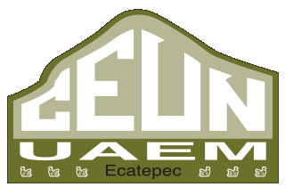
El logotipo, a través de símbolos gráficos transmite elementos que identifican al Centro Universitario UAEM Ecatepec, mismos que a continuación se presentan:
Transformación a Centro Universitario UAEM Ecatepec.
Localización Geográfica del CEUN (Municipio Ecatepec de Morelos)
El significado del nombre municipal: "Cerro de los vientos ó de la cara blanca".
La silueta del "Centro de los Vientos", simboliza el entorno del Centro Universitario, cuyos colores en el fondo verde y el contorno oro, representan la Identidad Universitaria.
Las siglas "CEUN" se ubican dentro del contorno del Cerro de los Vientos, representando que el Centro Universitario, es parte integral del Municipio de Ecatepec.
Las siglas de UAEM-Ecatepec, la primera palabra refiere a la dependencia a la Universidad Autónoma del Estado de México; la segunda a la localización del Centro Universitario.
Las seis grecas, representan el igual número de carreras que ofrece a la comunidad estudiantil del Centro Universitario UAEM-Ecatepec.
PLAN DE ESTUDIOS DE LA LICENCIATURA EN ADMINISTRACION
Caracteristicas Generales
1.Nombre del proyecto Curricular Licenciatura en administracion
2.Titulo que se le otroga Licenciado(a) en administracion
3.Total de creditos 400
4.Area del conocoimiento al que pertenecen Ciencias sociales y administrativas
5.Calendario escolar y periodos para administrar las unidades de aprendizaje Calendario escolar anual, con dos periodos regulares y un Intensivo.
6.Modalidad educativa en la que se Impartirá Escolarizada con administración flexible de la enseñanza.
Objetivos de la carrera
Formar profesionales éticos con capacidad para enfrentar los retos y cambios de las nuevas tendencias en el campo de la administración con una visión estratégica, sentido humanista y aplicando las técnicas y herramientas administrativas bajo un enfoque sistémico en el manejo de recursos, con especial énfasis en el ser humano y su entorno
Al término de la carrera el alumno: Tendrá la capacidad para enfrentar los retos y cambios de las nuevas tendencias en el campo de la administración con una visión estratégica, dispondrá de una formación queIncluya conocimientos en disciplinas relacionadas con la administración, comoInformática, economía, ciencias sociales y el dominio de al menos un idioma extranjero, lo que le permitirá desarrollarse profesionalmente con una visión más amplia, manifestando unInterés emprendedor para el diseño, creación y desarrollo de empresas.
Perfil de Egresado
El licenciado en administracion egresado del centro universitario UAEM Ecatepec, sera un profesional etico con habilidades y actitudes de liderazgo para dirigir los organismos sociales en la busqueda de la resolucion de sus problemas; a traves del desarrollo de competencias profesional en los ambitos de desempeño mediante saberes disciplinarios e integrales que le permitan ejecutar las funciones de la administracion apoyandose de metodos, trecnicas e instrumentos eb forma eficiente.
Estructura del Plan de Estudios por Núcleo de Formación
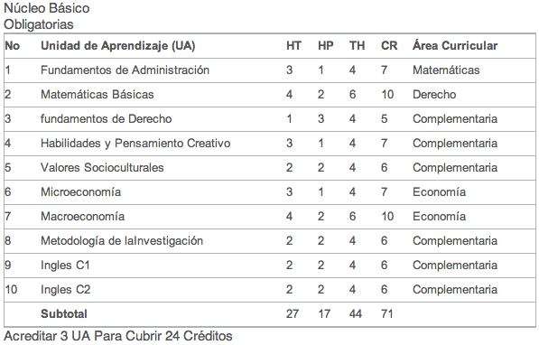
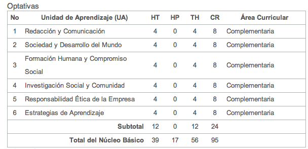
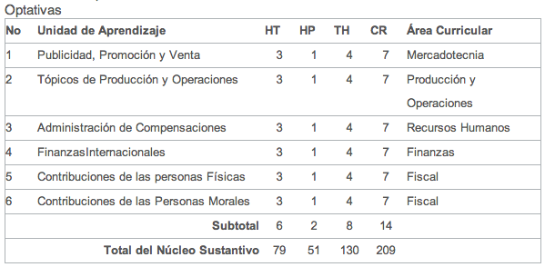
PLAN DE ESTUDIOS DE LA LICENCIATURA EN CONTADURIA
Caracteristicas Generales
1.Nombre del Proyecto Curricular:Licenciatura en Contaduría
2.Titulo que se Otorga: Licenciado/a en Contaduría
3.Total de Créditos: 400
4.Área del Conocimiento al que Pertenece: Ciencias Sociales y Administrativas
5.Calendario escolar y periodos para administrar las unidades de aprendizaje: Calendario Escolar Anual, con dos periodos Regulares y un Intensivo.
6.Modalidad educativa en la que se impartirá: Escolarizada con Administración flexible de la enseñanza.
Objetivos de la carrera
Formar profesionales éticos, con capacidad para generar, analizar e interpretar información financiera y administrativa para la toma de decisiones; con actitud emprendedora, visionaria y generadora de bienes y servicios para detectar y proponer soluciones económicos y sociales; con sentido ético, humanístico, critico, creativo analítico, positivo, comprometido, competitivo con actitud de servicio al cliente y a la comunidad.
Diseñará evaluará y propondrá sistemas orientados a la obtención, comprobación, inversión y análisis de información financiera y administrativa utilizando los conocimientos adquiridos para desarrollar investigaciones en sus diferentes ámbitos de competencia. Tendrá la capacidad de plantear, aplicar y elaborar estados financieros e informes considerando las políticas económicas y sociales de acuerdo a normas y principios nacionales e internacionales; con la finalidad de participar, realizar y plantear en la toma de decisiones financieras y contables para la mejora continua de carácter administrativo.
Perfil de Egresado
Será un profesional ético, con habilidades y actitudes para resolver las problemáticas que la sociedad le demanden a través del desarrollo de competencias profesionales en cada ámbito de desempeño, mediante saberes disciplinarios e integrales que le permitan ejecutar las funciones de la Contaduría auxiliándose de instrumentos y métodos.
Desarrollará diversas competencias profesionales para obtener, analizar y controlar formación financiera, legal, fiscal. Capaz de controlar la información financiera, legal y fiscal actualizada para la emisión de informes o dictámenes; interpretar y aplicar normatividad internacional para la conversión de estados financieros; estrategias de financiero e interpretación, de solución financiera, contable y fiscal que eleve la calidad y productividad en el desempeño profesional y la población beneficiada.
Estructura del Plan de Estudios por Núcleo de Formación
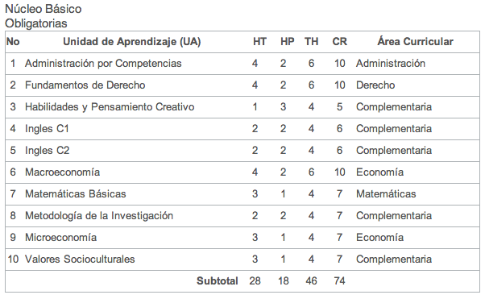
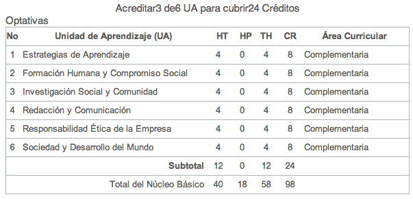
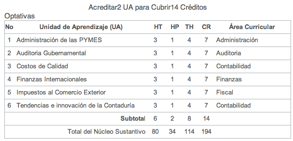
PLAN DE ESTUDIOS DE LA LICENCIATURA EN DERECHO
Caracteristicas Generales
1.Nombre del Proyecto Curricular:Licenciatura en Derecho
2.Titulo que se Otorga: Licenciado/a en Derecho
3.Total de Créditos: 400
4.Área del Conocimiento al que Pertenece: Ciencias Sociales y Administrativas
5.Calendario escolar y periodos para administrar las unidades de aprendizaje: Calendario Escolar Anual, con dos periodos Regulares y un Intensivo.
6.Modalidad educativa en la que se impartirá: Escolarizada con Administración flexible de la enseñanza.
Objetivos de la carrera
Conocer, comprender y entender la evolución histórica de la disciplina para el análisis de los diversos sistemas jurídicos, principios generales contando con los elementos técnicos para analizar, elaborar,Interpretar y aplicar la legislación.Interpretar, solucionar, representar y diseñarInstrumentos jurídicos que permitan la solución de problemas para producir una normaIndividualizada en los casos controvertidos suscitados en un marco de acción social legalmente contemplados.
Perfil de Egresado
El Licenciado en Derecho es el profesional que se encarga de estructurar,Integrar, sistematizar, regular,Interpretar, vigilar, aplicar y valorar la pertinencia del sistema jurídico nacional eInternacional que controla la conducta externa de personas físicas y morales en suInteracción social, reflexionando sobre el sistema y resolviendo los conflictos de derecho y situaciones de hecho que puedan presentarse en el curso de dichaInteracción a través de los mecanismos establecidos en la legislación aplicable.
Las competencias profesionales fundamentales son laInterpretación, la sistematización, laIntegración, la argumentación y la aplicación.
Conocer un sistema jurídico nacional eInternacional y la red social en las que se encuentran las problemáticas. Saber reflexionar,Identificar, elegir, dominar eIntegrar los problemas socialesInterpretando los principios, teorías, normas y axiomas, para poder comprender la disciplina del Derecho.
Estructura del Plan de Estudios por Núcleo de Formación
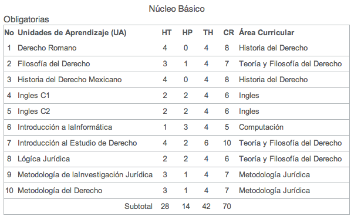
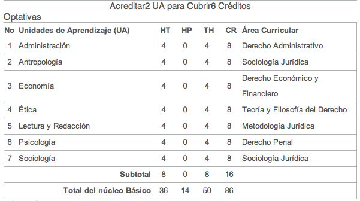
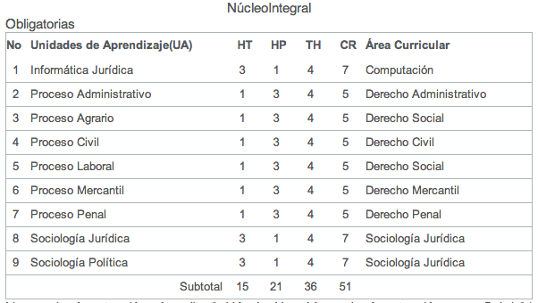
PLAN DE ESTUDIOS DE LA LICENCIATURA EN INFORMATICA ADMINISTRATIVA
Caracteristicas Generales
1.Nombre del Proyecto Curricular:Licenciatura en Informatica Administrativa
2.Titulo que se Otorga: Licenciado/a en Informatica Administrativa
3.Total de Créditos: 400
4.Área del Conocimiento al que Pertenece: Ciencias Sociales y Administrativas
5.Calendario escolar y periodos para administrar las unidades de aprendizaje: Calendario Escolar Anual, con dos periodos Regulares y un Intensivo.
6.Modalidad educativa en la que se impartirá: Escolarizada con Administración flexible de la enseñanza.
Objetivos de la carrera
Detectar y satisfacer las necesidades organizacionales relativas al uso y empleo deInformación administrativa .
Recabar y organizar los datos y procesos necesarios para el buen funcionamiento de la organización y cumplimiento de sus objetivos en un mundo globalizado; así como la creación administración y mantenimiento de servicios y sistemas de tratamiento deInformación administrativo,Integrados y eficientes para la toma de decisiones.
Desarrollará la habilidad de auto aprendizaje y superación constante.
Perfil de Egresado
El egresado será capaz de comprender íntegramente los problemas administrativos y productivos de cualquier organización.
Analizar, diseñar,Implementar, administrar y evaluar sistemas deInformación manuales y computarizados en la grande, mediana y pequeña empresa. Dialogar y conjuntar losIntereses de las distintasInstancias de la organización gracias a su formaciónInterdisciplinaria.
LiderarInnovando dentro de la organización.
Estructura del Plan de Estudios por Núcleo de Formación
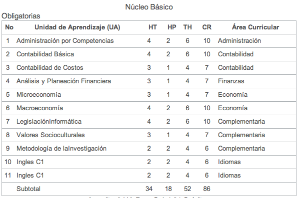
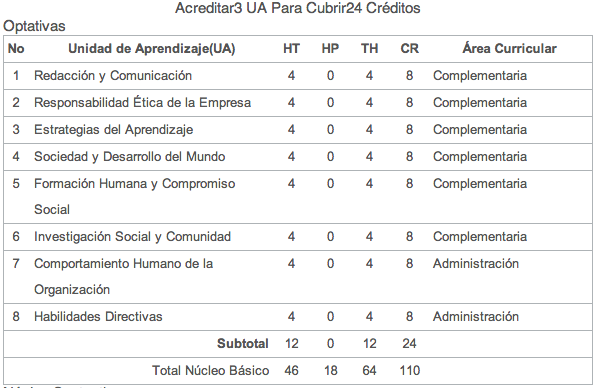
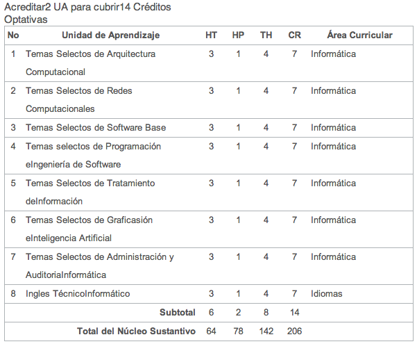
PLAN DE ESTUDIOS DE LA LICENCIATURA EN PSICOLOGIA
Caracteristicas Generales
1.Nombre del Proyecto Curricular:Licenciatura en Psicologia
2.Titulo que se Otorga: Licenciado/a en Psicologia
3.Total de Créditos: 484
4.Área del Conocimiento al que Pertenece: Ciencias Sociales y Administrativas
5.Calendario escolar y periodos para administrar las unidades de aprendizaje: Calendario Escolar Anual, con dos periodos Regulares y un Intensivo.
6.Modalidad educativa en la que se impartirá: Escolarizada con Administración flexible de la enseñanza.
Objetivos de la carrera
La formación de un Psicólogo profesional genera, plural, con solidez disciplina, metodológica y técnica, que lo habilite para problematizar la realidad psicosocial del hombre, comprender su significado en su contexto, con una visión totalitaria y holística, para planificar suIntervención práctica en la resolución de problemas que se presentan en la vida cotidiana.
Desarrollara conocimientos, habilidades y actitudes necesarias para desempeñarse con relación a la prevención, evaluación, detección, planeación, diagnostico,Intervención eInvestigación de problemáticas psicológicas en el ámbito social relacionadas a las áreas de psicología: clínica, educativa, organizacional y social.
Perfil de Egresado
El Licenciado en Psicología será responsable y consiente en el ejercicio de la profesión, se regirá con un alto apego hacia los valores éticos, consciente de sus responsabilidades para consigo mismo y con los demás, con honestidad, confidencialidad, y calidad, mediante la conducción de su práctica a través de los valores que promueve la psicología, comprometidos con la procuración de justicia, el respeto por los valores culturales y humanos, así como hacia los planteamientos teóricos y el trabajo de sus colegas: siendo capaz de conservar y acrecentar los valores nacionales y de grupos sociales. Tendrá habilidad en la expresión oral y escrita, así como las funciones cognitivas basadas en el análisis y la síntesis que coadyuvan a ser crítico, reflexivo, creativo y positivo para resolver problemas y tomar decisiones pertinentes.
Estructura del Plan de Estudios por Núcleo de Formación
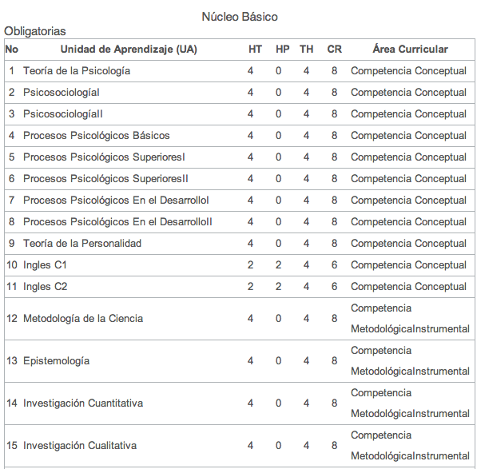
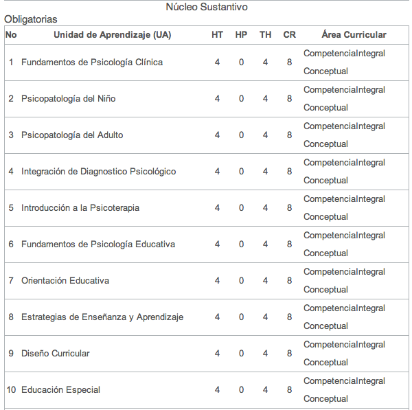
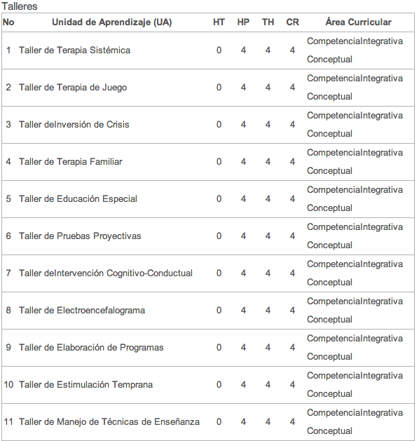
PLAN DE ESTUDIOS DE LA INGENIERIA EN COMPUTACION
Caracteristicas Generales
1.Nombre del Proyecto Curricular:Licenciatura en Ingenieria en Computacion
2.Titulo que se Otorga: Ingeniero en Computacion
3.Total de Créditos: 430-450
4.Área del Conocimiento al que Pertenece: Ingenieria y Tecnologia
5.Calendario escolar y periodos para administrar las unidades de aprendizaje: Calendario Escolar Anual, con dos periodos Regulares y un Intensivo.
6.Modalidad educativa en la que se impartirá: Escolarizada con Administración flexible de la enseñanza.
Objetivos de la carrera
Es el profesional que será capaz de realizar el análisis, el diseño, la implementación, desarrollo y el mantenimiento de sistemas computacionales, capacidad de observación y abstracción para reconocer y resolver problemas propios de otras disciplinas, mediante el uso de herramientas computacionales para satisfacer las necesidades en apoyo a la toma de decisiones.
Tendrá los conocimientos y habilidades en el desarrollo de sistemas computacionales, diseño y mantenimiento de hardware, comunicaciones y redes de computadoras, así como en la administración de recursos computacionales, es en esencia un solucionador de problemas, un profesional que modela sistemas a través del uso de sistemas electrónicos y de cómputo.
Perfil de Egresado
El egresado de la Licenciatura en Ingeniería en Computación del Centro Universitario UAEM Ecatepec, es un profesional que será capaz de realizar, poseer, desarrollar, administrar, proporcionar y realizar el análisis, diseño, y la implementación para crear tecnología de los sistemas computacionales y dar la solución a los problemas propios y de otras disciplinas, mediante el uso de herramientas computacionales para poder adaptarse al entorno y a la sociedad.
Estructura del Plan de Estudios por Núcleo de Formación

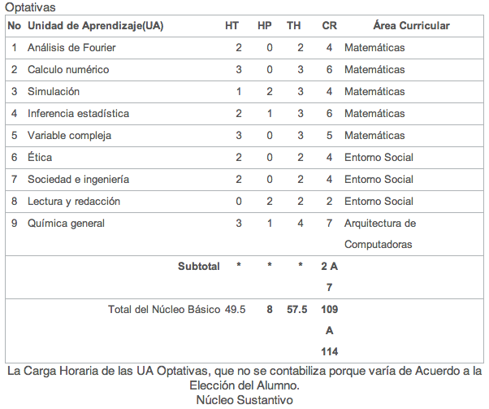

MAESTRIA EN ADMINISTRACION
Caracteristicas Generales
Objetivo General del Programa
Formar profesionales en Administración con los conocimientos y habilidades necesarios para el análisis y la crítica de los eventos internos y externos de las organizaciones vinculados con proveedores, manufactura, clientes y empleados, con la finalidad de diseñar y desarrollar estrategias orientadas a incrementar la eficiencia personal y organizacional.
Perfil del egresado
Habilidades y valores representativos de una función integral e idónea, para funcionar eficientemente en el campo laboral y social.
Habilidades Liderazgo visionario, comunicación personal, manejo de conflictos y motivación del capital humano
Definir estrategias y directrices de negocios orientadas al logro de ventajas competitivas.
Capacidad para mantenerse informado y consciente sobre la problemática de su entorno organizacional y social para influir en él creando métodos de trabajo acordes al desarrollo del sector productivo
Desarrollar investigación aplicada para Identificar y plantear problemas en su campo de desarrollo profesional y generar soluciones, considerando las implicaciones económicas, políticas y sociales del ámbito nacional e internacional.
Valores
Consientes de la necesidad de su inserción en el campo laboral con plena responsabilidad social en la administración de los recursos humanos y materiales, y del cumplimiento de la normatividad en todos sus ámbitos de aplicación, valorando los beneficios del ejercicio ético de la profesión y sus repercusiones sociales y económicas en el país.
Area de concentracion
Gestión Organizacional.
Requisitos de ingreso
1. Solicitud de Inscripción
2. Entrevista por el comité de selección
3. Presentar constancia de aprobación del examen de comprensión del idioma inglés ante la facultad de Lenguas.
4. Acta de nacimiento.
5. Título profesional de la licenciatura.
6. Cedula profesional.
7. Certificado de estudios de Licenciatura.
8. Comprobante de examen EXANI II (CENEVAL)
9. Breve curriculum actualizado.
10. Carta de exposición de motivos por los que se desea ingresar a la Maestría.
11. Dos fotografías recientes, tamaño infantil.
12. Comprobante del pago de los derechos correspondientes.
13. Documentos en original y dos copias para cotejo.
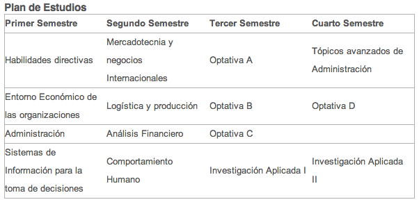
MAESTRIA EN CIENCIAS DE LA COMPUTACION
Caracteristicas Generales
Objetivo General del Programa
Formar capital humano de alto nivel con las destrezas intelectuales y metodológicas que les permitan realizar investigación para el desarrollo de tecnología en computación con la aplicación en los ámbitos científico y empresarial.
Mision
Somos generadores del desarrollo científico, tecnológico y social a través de la información integral de profesionistas de Educación superior y Posgrado de clase internacional comprometidos con su entorno.
Perfil de egresado
Al final del programa, el egresado tendrá las siguientes características:
Investigador capaz de dar respuesta a los problemas relacionados con las tecnologías de la información en el ámbito académico y empresarial.
Contará con habilidades para identificar, abstraer seleccionar, adaptar y aplicar los modelos matemáticos y computacionales en soluciones innovadoras a problemas prácticos.Desarrollará ideas innovadoras con aplicación tecnológica así como análisis crítico de ideas relacionadas con su área de trabajo.Adquirirá actitudes de disposición al trabajo en equipo, servicio, responsabilidad, disposición hacia la investigación científica y el trabajo multidisciplinario.
Linea de investigacion
Sistemas de Información
Inteligencia Artificial
Ingeniería de Software
Optativas
Durante el Programa de estudios, el estudiante cursa tres asignaturas optativas, las cuales dependen de la línea de investigación seleccionada
Requisitos de ingreso
1. Solicitar la inscripción a la Maestría en Ciencia de la Computación en las sedes del Posgrado.
2. Poseer título de Licenciatura en Computación o área afín.
3. Aprobar los exámenes admisión.
4. Aprobar un examen de comprensión de un idioma extranjero.
5. Pagar los derechos escolares.
6. Entrevistarse con una comisión de profesores del posgrado.
7. Entregar los siguientes documentos:
8. Curriculum vitae (incluyendo dirección y teléfono para contactar al interesado).
9. 6 Fotografías tamaño infantil blanco y negro.
10. Titulo de grado en caso de ser estudiantes de otra institución, para egresados de la UAEM bastara con la copia del acta de examen.
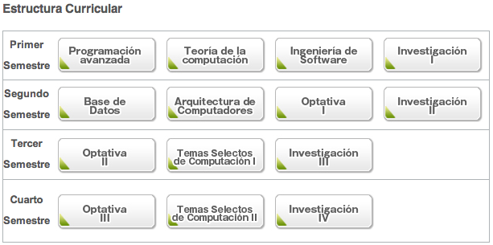

IDIOMAS
CELE
El Centro de Enseñanza de Lenguas ofrece estudios extracurriculares de Inglés, Francés y Alemán nivel básico, intermedio y avanzado, que pueden cursarse de una manera simultánea a la licenciatura. Al concluir los cursos básicos se hace entrega de diploma de la UAEM, y la oportunidad de continuar los estudios para obtener certificado internacional. Ofrecemos cursos diarios y sabatinos, los grupos son reducidos, los catedráticos son avalados por la UAEM y cuentan con certificados internacionales. Los cursos son semestrales e intensivos y cada semestre se abre la convocatoria para el ingreso, sin examen de admisión y con la posibilidad de ser ubicado en el nivel de manejo del idioma adecuado, a través de un examen de ubicación.
Mision
El Centro de Enseñanza de Lenguas es una dependencia universitaria de naturaleza docente en la que la verdad, la responsabilidad y la colaboración son los valores primordiales que se complementan con los principios de honestidad, lealtad e igualdad. Su misión es proporcionar oportunidades de aprendizaje de calidad a la comunidad universitaria y a la sociedad en general de edad post-secundaria, para desarrollar el conocimiento de diferentes lenguas, entendidas en su totalidad cultural, y fomentar el respeto a la diversidad de expresión cultural dentro de un ambiente humanista.
Vision
El Centro de Enseñanza de Lenguas dará respuesta de calidad integral a las necesidades de aprendizaje de una segunda lengua en un mundo globalizado, a través de la congruencia entre sus planes de estudio y programas flexibles, pertinentes en cada una de las lenguas que ofrece, con modalidades alternas al estudio escolarizado, dentro de instalaciones adecuadas y suficientes para permitir la incorporación de recursos y medios de punta instrumentará programas permanentes de tutoría para atender el fenómeno de la deserción
IDIOMAS
PIEI

El Programa Institucional de Enseñanza de Inglés está conformado por cinco niveles: A, B, C, D y E. Cada nivel se subdivide en dos periodos de estudio, de lo cual se desprenden las unidades de aprendizaje: A1, A2, B1, B2, C1,C2 y así sucesivamente. La gran mayoría de los planes de estudio a nivel licenciatura establecen como nivel inicial el C1 y en su plan de estudios se señalan las unidades de aprendizaje a cursar, lo cual deberá ser del conocimiento de los alumnos de nuevo ingreso.
Mision
El Programa Institucional de Enseñanza de Inglés es la instancia que promueve y apoya acciones y estrategias para homologar y elevar la calidad de los procesos de enseñanza y aprendizaje del idioma inglés en la Universidad Autónoma del Estado de México, a través de proyectos académicos orientados al desarrollo de aprendizajes de naturaleza presencial, autónoma y a distancia.
Vision
PIEI se vislumbra como un programa esencialmente académico que garantiza el logro de estándares de dominio de inglés en sus egresados de los niveles medio superior y superior, a través de redes de conocimiento especializadas en el área, conformadas por docentes de la lengua altamente calificados e involucrados en procesos continuos de desarrollo profesional y por ende, de generación del conocimiento, como parte de su identidad institucional.
IDIOMAS
AUTOACCESO
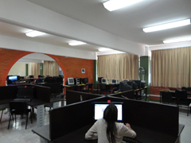
Mision
Facilitar el aprendizaje de una segunda lengua y promover el aprendizaje autónomo.
Vision
Que los alumnos obtengan un excelente dominio de una segunda lengua en todos los aspectos y estén capacitados para aplicarlos a nivel profesional.
Servicios
Área de Lectura
Área de Multimedia
Área de Video
Área de Grabación y Sonido
IDIOMAS